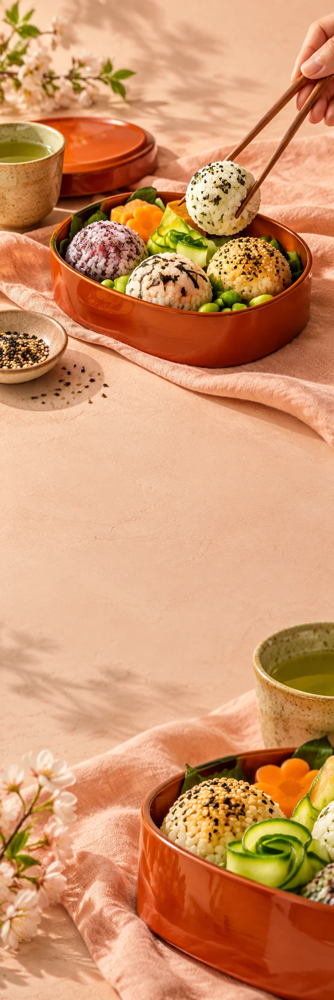

RIZU KITCHEN
Food & lunchLunchcampagne
RIZU KITCHEN / A LITTLE LUNCH BREAK
PAUZE.
MAAR DAN LEKKER.
Bekijk de lunch-edit RIZU KITCHEN / VAN DICHTBIJ
Dek je middag.
Niet alleen je tafel.
Een doosje vol kleur. Een hap met aandacht. Klap je laptop even dicht en maak van je lunch het leukste kwartier van de dag.
01Openklappen
02Proeven
03Even blijven
NOG EEN HAP.
DAN WEER VERDER.
Tussen alles door mag ook iets goeds zitten.
Bekijk de lunch-edit